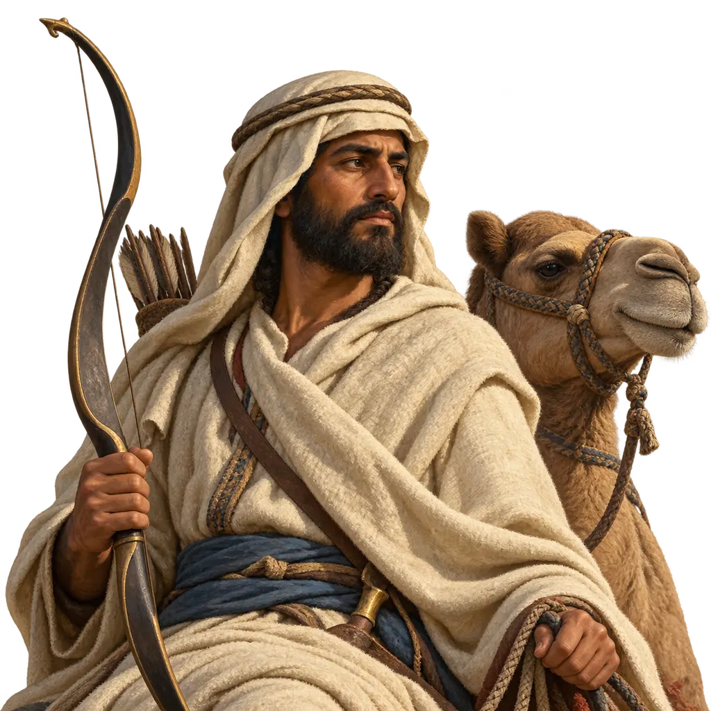
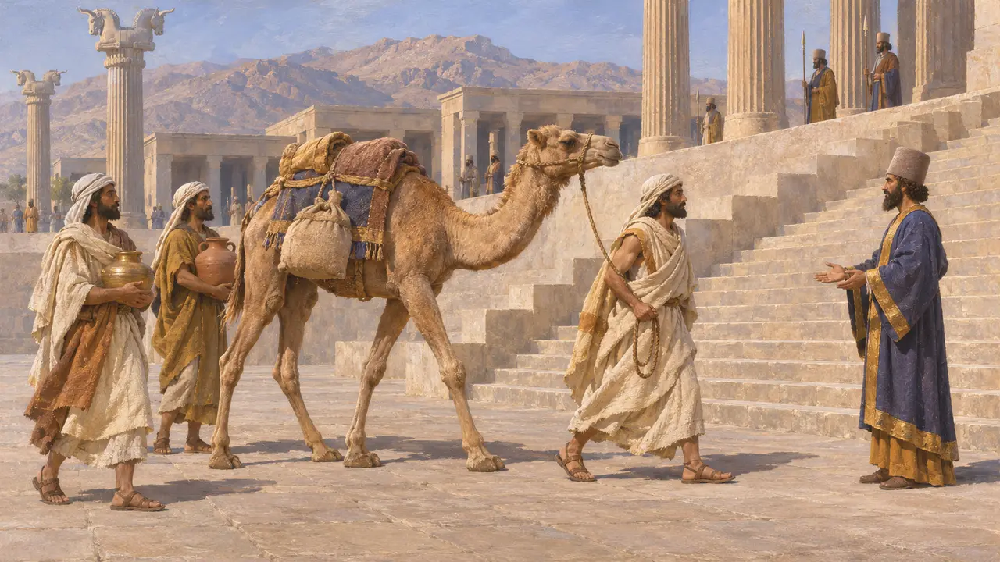
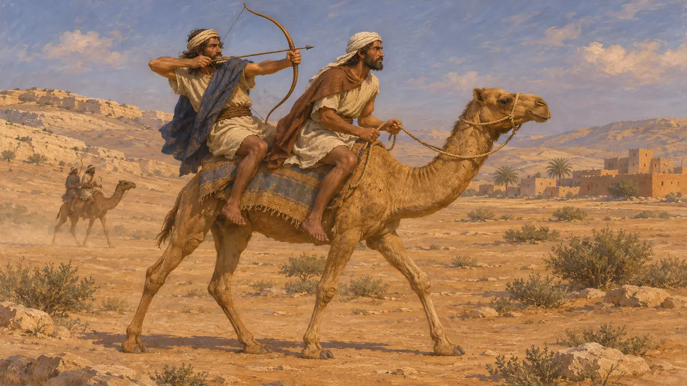
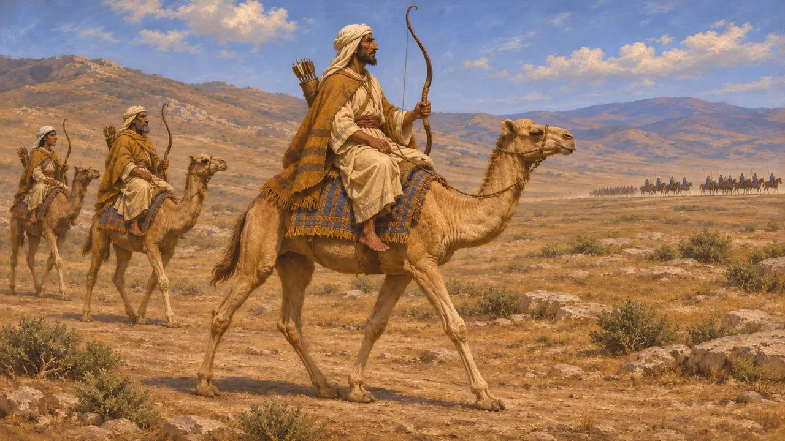
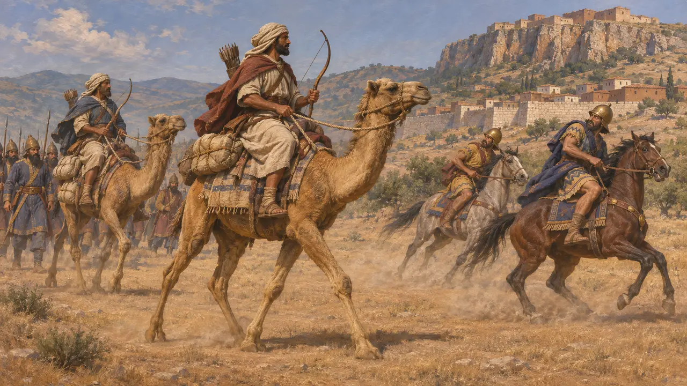
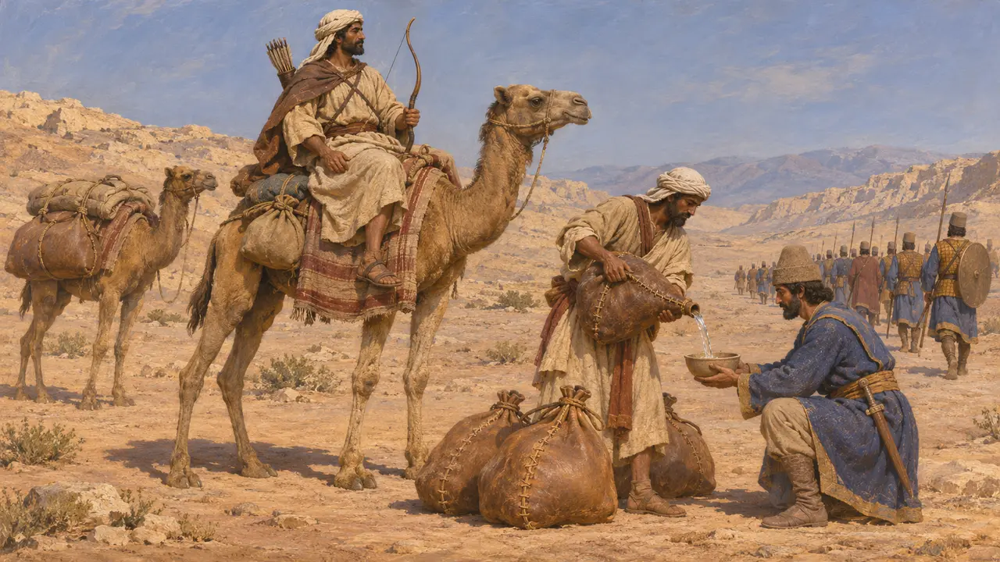

Enzyklopädie › Soldaten und Schiffe

Arabischer Kamelreiter
Arabische Bogenschützen auf Kamelen im Heer des persischen Königs, um 525-479 v. Chr.
Im Spiel: Level 2: Der Lanzenträger
Arabische Völker vom Wüstenrand zwischen Ägypten, Syrien und Mesopotamien unterstützten die persischen Könige und dienten Xerxes 480 als berittene Bogenschützen auf Kamelen. Herodot beschreibt sie im Heer des Xerxes. Davon getrennt erzählt er, wie bei Sardes Kamele, auf denen Kyros' eigene Männer ritten, die lydischen Pferde in Schrecken versetzten. Beides zusammen erklärt, warum Kamele ihren Platz in der persischen Kriegführung hatten.
Im Spiel: Im Spiel scheuen Pferde vor ihm zurück, und er schießt Reiter nieder, doch Speerträger im offenen Gelände vertreiben ihn. Die Idee stammt aus Herodots Erzählung von Sardes. Herodot lässt Xerxes die Kamele zudem im hinteren Teil des Heeres halten, und keine Quelle zeigt sie im Kampf in Griechenland.

Araber in den Ländern des Königs
Zeitgenössisch belegtDie Inschrift des Dareios in Behistun nennt Arabien unter den Ländern, die ihm zufielen, und spätere königliche Listen wie die an seinem Grab wiederholen den Namen. Auf den Treppen des Apadana in Persepolis führt eine Gesandtschaft von Gabenbringern ein Dromedar mit sich; sie wird gewöhnlich als arabisch gedeutet. Die persische Überlieferung zählt die Araber also zu den Völkern des Reiches.
DB §6; DNa; Apadana reliefs, Persepolis

Kamelbogenschützen vor den Persern
Zeitgenössisch belegtArabische Kamelkrieger waren lange vor Kyros bekannt. Assyrische Palastreliefs aus Ninive zeigen Assurbanipals Kriege gegen arabische Stämme im 7. Jahrhundert v. Chr. Darauf trägt jedes Kamel zwei Männer: Einer lenkt das Tier, der andere schießt mit dem Bogen. Assyrische Aufzeichnungen nennen zudem arabische Königinnen und Häuptlinge, die Tribut in Kamelen und Gewürzen entrichteten.
I. Eph'al, The Ancient Arabs, 1982

Herodot über die Araber des Xerxes
Antiker BerichtHerodot berichtet, die Araber im Heer des Xerxes hätten lange gegürtete Mäntel getragen und lange, rückwärts geschwungene Bogen geführt. Ihr Befehlshaber war Arsames, ein Sohn des Dareios. Er fügt hinzu, sie hätten Kamele geritten, die nicht langsamer als Pferde waren, und man habe sie am Ende des Zuges aufgestellt, damit die Pferde nicht scheuten. Die arabischen Kamelreiter und die libyschen Wagenkämpfer beziffert er zusammen auf 20.000 – als Teil einer Gesamtstärke des Heeres, die Historiker für stark übertrieben halten.
Herodotus 7.69, 7.86-87, 7.184

Kamele gegen Pferde bei Sardes
UmstrittenHerodot erzählt, wie Harpagos Kyros riet, Männer auf die Lastkamele zu setzen und sie vor Sardes gegen die Reiterei des Kroisos zu schicken. Die lydischen Pferde ertrugen Anblick und Geruch der Kamele nicht und wandten sich ab. Xenophons Kyros-Roman schildert eine ähnliche Kamellist, verlegt sie aber in eine frühere Schlacht. Die Forschung hält es für glaubhaft, dass Pferde, die Kamele nicht gewohnt sind, scheuen, bezweifelt jedoch, dass die List allein die Schlacht entschied.
Herodotus 1.80; Xenophon, Cyropaedia 7.1

Eher Freunde als Tributpflichtige
Antiker BerichtHerodot berichtet, die Araber seien nie zu Untertanen gemacht worden. Ein arabischer König habe dem Heer des Kambyses 525 auf dem Marsch nach Ägypten sicheres Geleit zugesagt und in der Wüste Wasser in Kamelschläuchen bereitgestellt. Zudem hätten die Araber dem König statt Tribut jährlich ein Geschenk aus Weihrauch gesandt. Moderne Historiker nehmen an, dass dies für einige arabische Gruppen galt, während andere innerhalb der Satrapien lebten.
Herodotus 3.4-9, 3.88, 3.97; P. Briant, From Cyrus to Alexander, 2002
Quellen
- Herodotus 1.80, 3.4-9, 3.88, 3.97, 7.69, 7.86-87, 7.184
- DB §6; DNa
- I. Eph'al, The Ancient Arabs, 1982
- P. Briant, From Cyrus to Alexander, 2002
- R. Bulliet, The Camel and the Wheel, 1975
- Xenophon, Cyropaedia 7.1